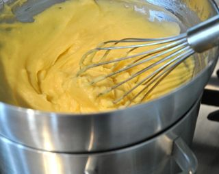
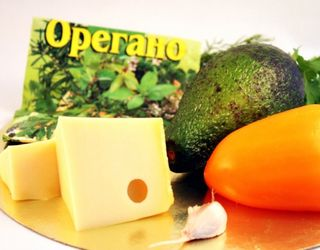
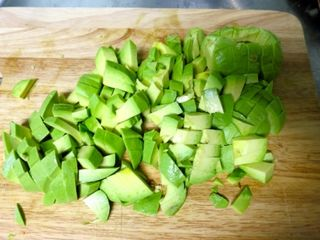

Шаг 1: Приготовим салатную заправку.
В глубокой миске соединяем просеянную муку через сито, горчичный порошок, сахарный песок и поваренную соль, затем добавляем два куриных яйца и уксус. Всё необходимо тщательно взбить миксером до получения однородной массы.

Потом на водяной бане нужно варить массу до загустения. По времени это займет минуты 3-4. При этом необходимо постоянно помешивать заправку венчиком. Снимаем с огня и даём остыть. Когда масса остыла, доливаем сливки (жирность будет зависеть от ваших пристрастий или какую найдёте). Если соус покажется вам сильно густым, его можно разбавить небольшим количеством свежего молока. При желании можно добавить несколько капель сока свежего лимона. Соус должен быть довольно таки густым и вкус насыщенным. Тогда с уверенностью можно сказать, что соус получился. Для того, чтобы соус хранился у нас и неделю, и две, его необходимо хранить в плотно закрытой банке или ином герметично закрывающимся контейнере.
Шаг 2: Готовим салат.

Перед началом приготовления необходимо тщательно помыть и очистить все овощи и фрукты.

Авокадо, если он мягкий, можно раздавить вилкой. Но советую брать ещё твёрдый. Тогда его можно нарезать на кубики, так авокадо в салатике будет смотреться лучше. Дальше уже очищенный от семенной сердцевины болгарский перец нарезаем также на кубики. Петрушку и чеснок размельчить как можно мельче. Сыр перед тем, как будем натирать на тёрке, ставим на 5 минут в морозилку. Так нам будет легче с ним управиться.
В глубокой миске смешиваем все ингредиенты, добавляем орегано, далее заправляем салатной заправкой.